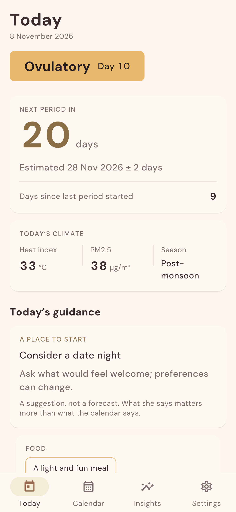

What it does
- Remembers the dates. An estimate of the next period, with the uncertainty stated in days rather than hidden.
- Suggests something kind. One idea for the day, in words, with the reminder that her answer matters more than the calendar.
- Reads the weather, not her mood. Heat and air quality shape the advice. Hormones are never used to explain a person.
- Stays on the phone. No account, no sync, no analytics. What is logged here does not leave it.
A look

Download
Version {{LATEST_VERSION}} Download the APKAndroid 7.0 and newer, 64-bit phones — the arm64 build, which is the small one. On a 32-bit device or an emulator, take the universal APK. Installed directly, so Play Protect asks you to confirm. Not on the Play Store.